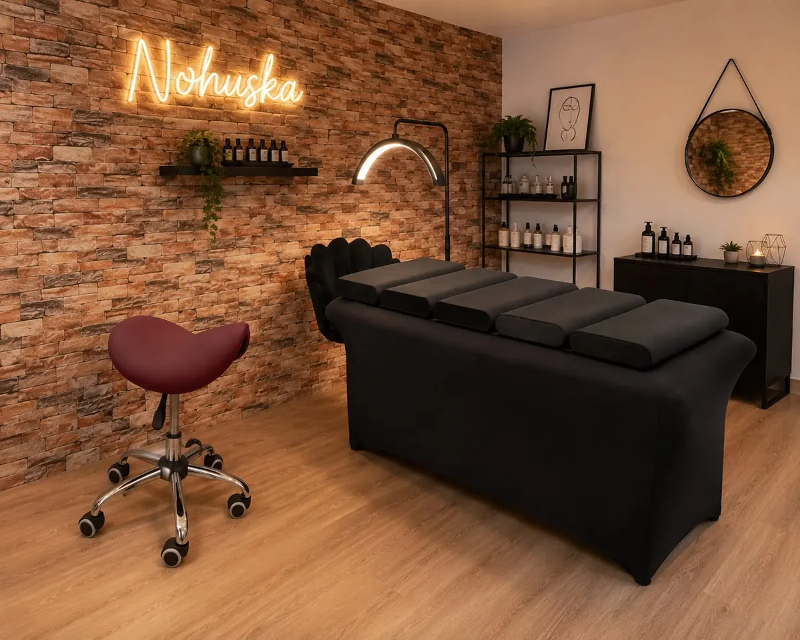

Hair Stroke · Pelo a pelo · Powder Brows
Micropigmentación de cejas en Granollers
Diseñamos forma, técnica y pigmento después de valorar tu piel, tu pelo natural, posibles trabajos anteriores y el resultado que buscas. Comparamos Hair Stroke, efecto pelo a pelo y Powder Brows antes de recomendar una opción.

Cejas naturales diseñadas para tu rostro
Una ceja hiperrealista no se consigue copiando una plantilla. Observamos proporciones, dirección del pelo, densidad, asimetrías y expresión para plantear un diseño que se integre con tu rostro.
Antes de comenzar dibujamos la propuesta. Puedes revisar forma y proporción y resolver dudas sobre la técnica, la evolución del pigmento, los cuidados y el mantenimiento.
Comparativa de técnicas
Hair Stroke, pelo a pelo o Powder Brows
Valoración antes de reservar
Qué revisamos en tu primera consulta
- Piel, sensibilidad y estado actual de la zona.
- Cantidad, dirección y distribución del pelo natural.
- Asimetrías y proporciones del rostro.
- Trabajos anteriores, color y forma existentes.
- Resultado buscado y mantenimiento que puedes asumir.
¿Tienes un trabajo anterior?
Envíanos fotografías actuales, sin filtro y con luz natural. Un trabajo previo puede condicionar forma, color y técnica; no confirmaremos una propuesta definitiva sin valorarlo.
Enviar mis fotografíasCómo es el proceso
Servicio local · cita previa
Micropigmentación de cejas cerca de ti
Realizamos las valoraciones y los tratamientos en Nohuska Beauty Lab, Avinguda Sant Esteve, 40, 08402 Granollers. Atendemos a clientas de Granollers, Canovelles, Les Franqueses, La Roca, Cardedeu, La Garriga, Mollet y otros municipios del Vallès Oriental.
Si vienes desde otra localidad, puedes enviar primero fotografías para organizar la valoración. La técnica definitiva se confirma presencialmente.
Presupuesto personalizado
El precio depende de la técnica, el estado de la piel y del pelo y de si existe un trabajo anterior. La valoración gratuita permite recibir una propuesta antes de decidir.
Galería responsable
Resultados reales y evolución de la ceja
La elección de técnica debe apoyarse en casos reales comparables y en la evolución curada, no únicamente en el resultado recién realizado. Publicaremos fotografías propias y autorizadas identificando correctamente la técnica y el momento de la curación.
No utilizamos imágenes de stock como si fueran resultados de micropigmentación realizados por Nohuska.
Preguntas sobre micropigmentación de cejas
¿Qué diferencia hay entre Hair Stroke y Powder Brows?
Hair Stroke busca recrear visualmente trazos similares al pelo; Powder Brows crea un sombreado degradado. La piel, el pelo existente, los trabajos anteriores y el resultado deseado determinan qué técnica puede encajar.
¿Se pueden conseguir unas cejas naturales o hiperrealistas?
La naturalidad depende del diseño, la técnica, la piel, el pelo existente y la curación. Buscamos integrar el trabajo con tus rasgos, sin prometer un resultado idéntico en todas las personas.
¿Cuánto cuesta la micropigmentación de cejas?
El presupuesto depende de la técnica, el estado de la piel y del pelo y de si existe un trabajo anterior. La valoración es gratuita.
¿Cómo evoluciona al curar?
El pigmento suele verse más intenso al principio y se suaviza durante la curación. La fijación y el tono final son individuales.
¿Dónde se realiza?
En Nohuska Beauty Lab, Avinguda Sant Esteve, 40, 08402 Granollers, con cita previa.
¿La valoración es gratuita?
Sí. Revisamos forma, piel, densidad, trabajos anteriores y el efecto que buscas antes de recomendar una técnica.
Más opciones para tus cejas
Diseñemos tus cejas antes de elegir técnica
Valoración gratuita y personalizada en Granollers.